Project Overview
The Paterson AI Street Cleanliness System uses AI-powered video analysis from garbage truck dashcams to automatically detect and document street cleanliness violations across Paterson, NJ. The system processes dashcam footage, aligns video frames with GPS coordinates, scores street cleanliness using the Keep America Beautiful (KAB) methodology, and auto-generates warning letters to nearby property owners.
Team: Guangyuan Yang (Technical Lead), Jeffrey Wang (Sponsor Liaison), Suyan Ying (Report Writer)
Sponsor: City of Paterson, NJ — Edward Boze (CIO), Bandana Parajuli (Data Analyst)
What's New in v2
- Human calibration dataset: 39 frames manually labeled, 89% accuracy validated
- Two-step separation prototype: Scene description + rule matching for transparency
- Evidence cards: Visual proof for every HIGH and MEDIUM detection
- Interactive calibration report: Human vs Single-Step vs Two-Step comparison
- R-21 re-analyzed with finalized prompt (960×540 resolution)
- Fully restructured codebase with centralized config.yaml
How It Works
The two-tier AI system uses GPT-4o-mini (~$0.0003/frame) as a fast screening filter, then sends flagged frames to GPT-4o (~$0.004/frame) for detailed KAB scoring with temperature=0 for consistency.
Pilot Routes
| Route | Date | Season | Resolution | Frames | Clean | HIGH | MEDIUM | LOW | Letters | AI Cost |
|---|---|---|---|---|---|---|---|---|---|---|
| R-75 | Jan 23, 2026 | Winter/Snow | 640×360 | 39 | 12 (31%) | 3 | 4 | 20 | 45 | $0.15 |
| R-21 | Mar 2, 2026 | Spring | 960×540 | 44 | 4 (9%) | 0 | 8 | 32 | 60 | $0.24 |
| Combined | 83 | 16 | 3 | 12 | 52 | 105 | $0.39 | |||
Cost Estimates
Known Limitations
- Resolution: 640×360 dashcam footage limits small-item detection. Higher resolution (960×540+) significantly improves accuracy.
- Boundary cases: Snow patches and small litter are sometimes indistinguishable even to human reviewers (3/39 frames). System flags these as MEDIUM for human review.
- Special locations: Garbage collection facilities show as flagged. City should provide facility location list for filtering.
- Owner data: Warning letters use placeholder names. City plugs in owner database locally in production.
Contact
Guangyuan Yang (Technical Lead) — gy2012@nyu.edu
Calibration Report
Interactive three-way calibration comparing Human judgment vs Single-Step AI vs Two-Step AI across 39 manually-labeled frames. The report validates 89% accuracy with zero false positives at HIGH confidence level.
Calibration Summary
| Human Label | Count | Description |
|---|---|---|
| Clean | 31 | No issues visible |
| Dirty | 5 | Clear cleanliness issues |
| Uncertain | 3 | Ambiguous even to human reviewers (snow/trash indistinguishable) |
The two-step pipeline caught 1 extra problem that the single-step pipeline missed (frame_0017), demonstrating the value of the separation approach for transparency and auditability.
Interactive Report
Route Maps
Interactive Folium maps showing full GPS tracks (light gray) with analyzed segments (blue). Click color-coded markers for frame-level details including KAB scores, dumping flags, and assessment text.
Marker colors: RED = HIGH ORANGE = MEDIUM GREEN = LOW/clean
R-75 — January 23, 2026 (Winter, 640×360)
R-21 — March 2, 2026 (Spring, 960×540)
Multi-Vehicle Coverage — 4 Trucks, 1 Day (1,948 Addresses)
Evidence Cards
Visual evidence for every HIGH and MEDIUM detection. Each card shows the original dashcam frame (left) alongside the AI analysis panel (right) with confidence badge, KAB scores, detected items, and assessment. Click any card to enlarge.
R-75 — January 23, 2026 (7 cards: 3 HIGH, 4 MEDIUM)
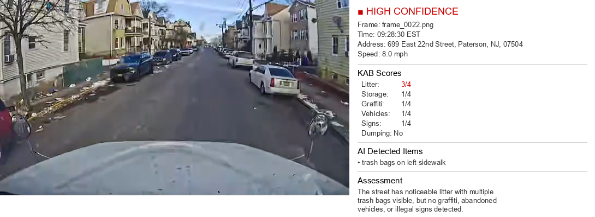
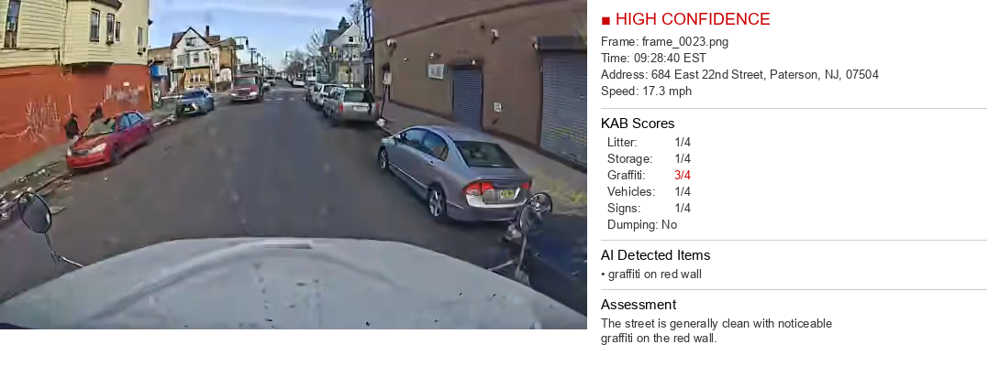
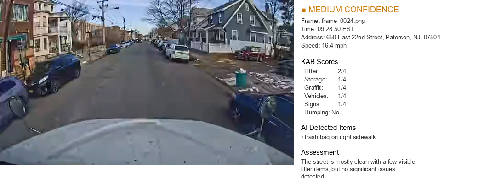
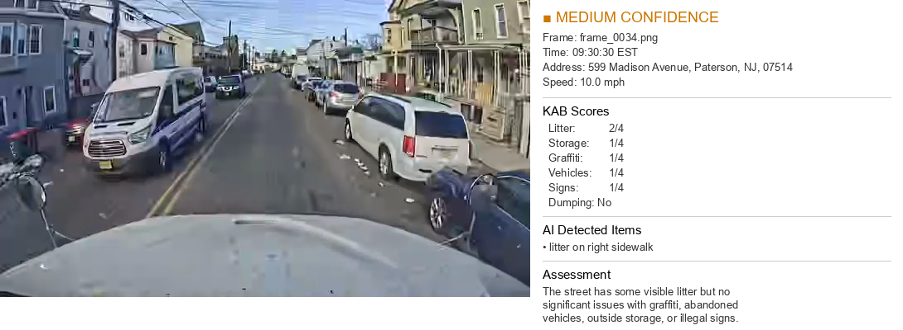
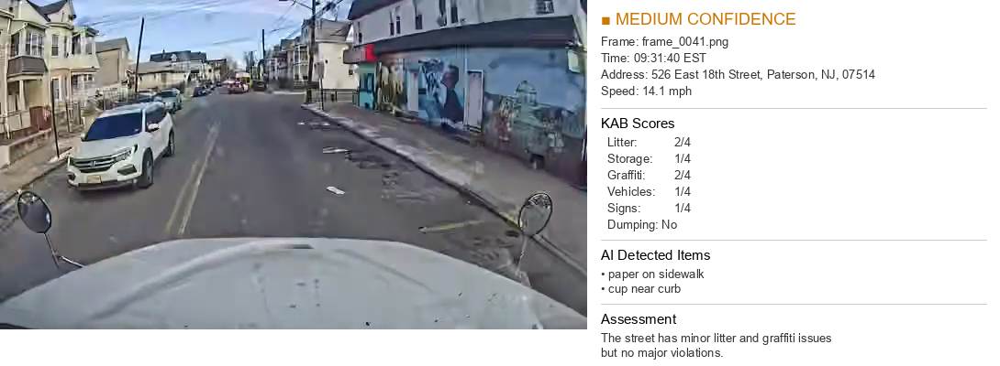
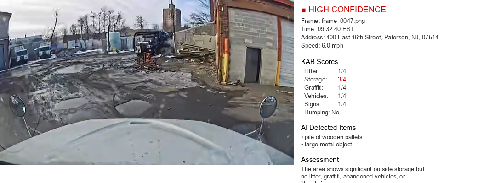
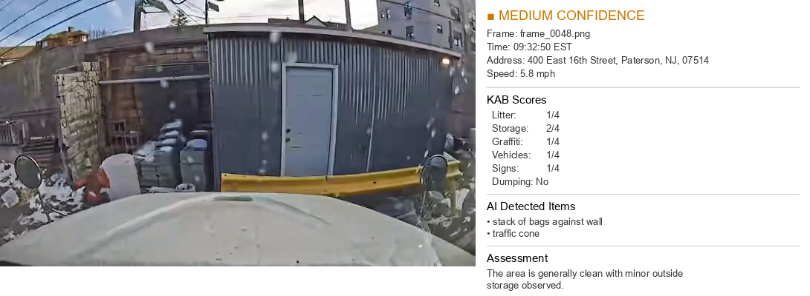
R-21 — March 2, 2026 (8 cards: all MEDIUM)
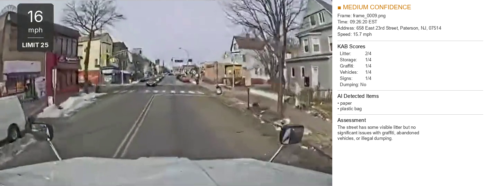
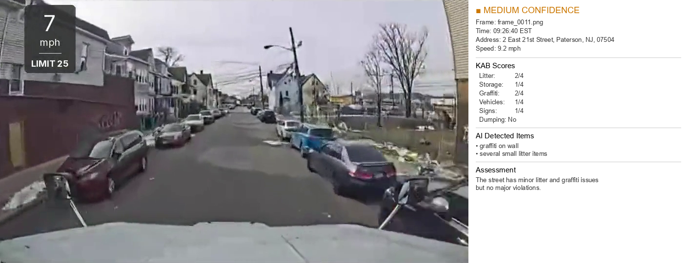
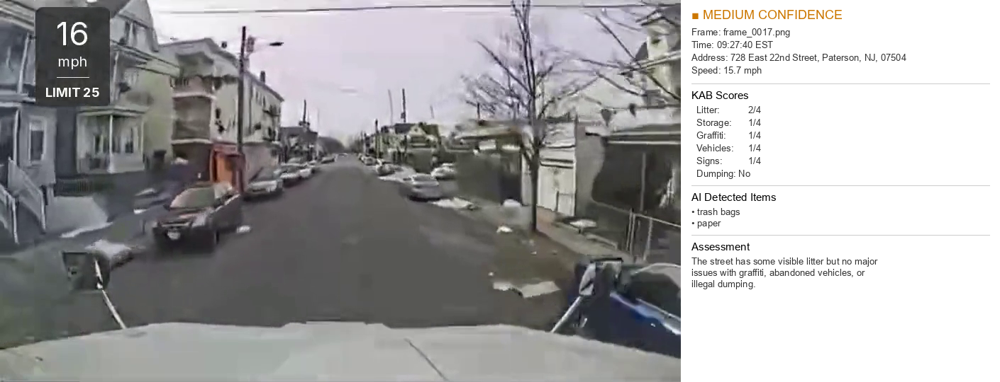
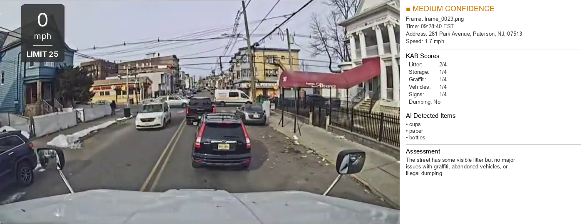
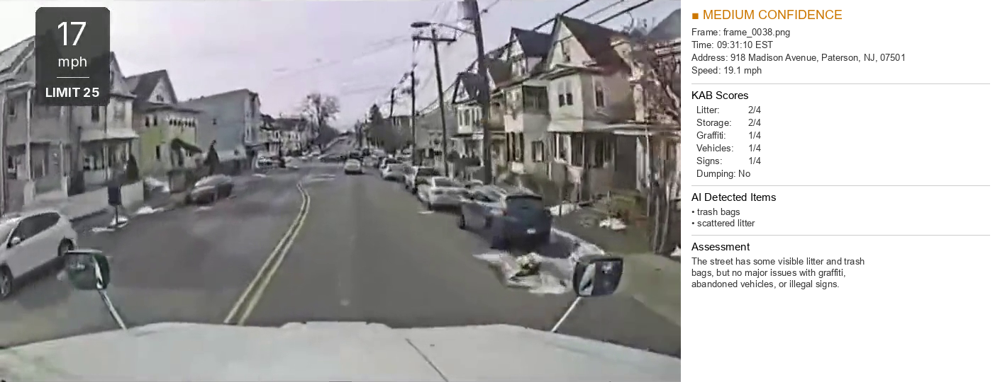
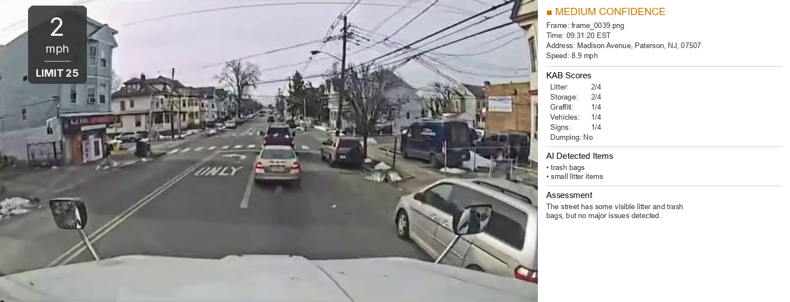
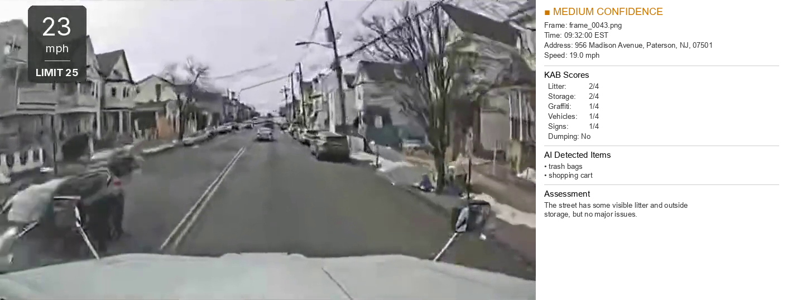
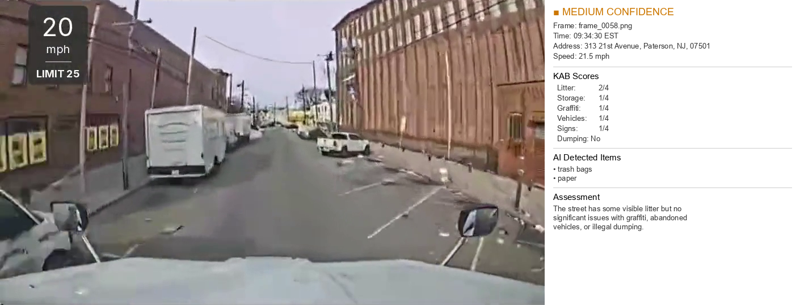
Warning Letter Summary — R-75 (Jan 23, 2026)
9 detections → 45 letters (5 nearest properties per detection, shotgun approach).
| Frame | Time | Detection Address | Issue Type | Dumping | Nearest Recipient | Dist (m) |
|---|---|---|---|---|---|---|
| 0022 | 09:28:30 | 699 East 22nd St | Excessive Litter | No | 708 E 22ND ST | 9 |
| 0023 | 09:28:40 | 684 East 22nd St | Cleanliness Violation | No | 672 E 22ND ST | 12 |
| 0024 | 09:28:50 | 650 East 22nd St | Excessive Litter | No | 659 E 22ND ST | 9 |
| 0027 | 09:29:20 | 583 East 22nd St | Cleanliness Violation | No | 580 EAST 22ND ST | 3 |
| 0034 | 09:30:30 | 599 Madison Ave | Excessive Litter | No | 600-602 MADISON AVE | 2 |
| 0041 | 09:31:40 | 526 East 18th St | Excessive Litter | No | 518 E 18TH ST | 8 |
| 0042 | 09:31:50 | 512 East 18th St | Excessive Litter | No | 514 E 18TH ST | 2 |
| 0047 | 09:32:40 | 400 East 16th St | Illegal Dumping / Litter / Storage | Yes | 393-395 E 16TH ST | 6 |
| 0048 | 09:32:50 | 400 East 16th St | Litter / Storage | No | 393-395 E 16TH ST | 6 |
Warning Letter Summary — R-21 (Mar 2, 2026)
12 detections → 60 letters (5 nearest properties per detection).
| Frame | Time | Detection Address | Issue Type | Dumping | Nearest Recipient | Dist (m) |
|---|---|---|---|---|---|---|
| 0009 | 09:26:20 | 658 East 23rd St | Excessive Litter | No | 660 E 23RD ST | 2 |
| 0011 | 09:26:40 | 2 East 21st St | Excessive Litter | No | 9 E 21ST ST | 7 |
| 0013 | 09:27:00 | 531 14th Ave | Excessive Litter | No | 524-526 14TH AVE | 7 |
| 0014 | 09:27:10 | 531 14th Ave | Illegal Dumping / Litter / Storage | Yes | 524-526 14TH AVE | 7 |
| 0017 | 09:27:40 | 490 14th Ave | Excessive Litter | No | 483 14TH AVE | 7 |
| 0019 | 09:28:10 | 382 Park Ave | Excessive Litter | No | 383 PARK AVE | 1 |
| 0023 | 09:28:40 | 281 Park Ave | Excessive Litter | No | 280 PARK AVE | 1 |
| 0038 | 09:31:10 | 113 Park Ave | Excessive Litter | No | 112 PARK AVE | 1 |
| 0043 | 09:31:50 | 42 10th Ave | Excessive Litter | No | 40 10TH AVE | 2 |
| 0044 | 09:32:10 | 18 10th Ave | Excessive Litter | No | 18 10TH AVE | 0 |
| 0057 | 09:34:20 | Rosa Parks Blvd | Excessive Litter | No | 455 ROSA PARKS BLVD | 3 |
| 0058 | 09:34:30 | Rosa Parks Blvd | Excessive Litter | No | 439 ROSA PARKS BLVD | 4 |
Sample Warning Letter
KAB Scoring Methodology
Each video frame is scored on 5 dimensions using the Keep America Beautiful Community Appearance Index (1–4 scale, 1 = best). The system also flags illegal dumping as a binary detection.
| Dimension | 1 (Best) | 2 | 3 | 4 (Worst) |
|---|---|---|---|---|
| Litter | Minimal | Some visible | Catches eye frequently | Extremely littered |
| Graffiti | None | Few tags | Multiple tags | Continuous |
| Abandoned Vehicles | None | 1 vehicle | 2–3 vehicles | 4+ vehicles |
| Outside Storage | None | 1–4 items | Fills small shed | Fills garage |
| Illegal Signs | None | 1–5 signs | 6–9 signs | 10+ signs |
Confidence: clean → LOW → MEDIUM → HIGH (HIGH/MEDIUM trigger warning letters)
Two-Tier AI Architecture
Single-Step Pipeline (Production)
GPT-4o-mini screens all frames (~$0.0003/frame), then GPT-4o scores flagged frames (~$0.004/frame) with temperature=0.
Validated: 89% accuracy, 0 false positives at HIGH.
Two-Step Pipeline (Prototype)
Step 1: GPT-4o describes scene (no scoring). Step 2: GPT-4o matches description to KAB rules (no image).
Benefit: Transparency & auditability. Caught 1 extra issue single-step missed.
Route R-75 — Single-Step Results (Jan 23, 2026)
640×360 resolution, winter/snow conditions. Showing flagged frames only.
| Frame | Time | Address | Confidence | Litter | Graffiti | Storage | Dumping | Assessment |
|---|---|---|---|---|---|---|---|---|
| 0017 | 09:27:40 | 646 14th Ave | MEDIUM | 2 | 1 | 2 | No | Slightly littered, outside storage |
| 0022 | 09:28:30 | 699 E 22nd St | HIGH | 3 | 1 | 2 | No | Moderately littered |
| 0023 | 09:28:40 | 684 E 22nd St | MEDIUM | 2 | 2 | 2 | No | Litter + graffiti |
| 0024 | 09:28:50 | 650 E 22nd St | HIGH | 3 | 1 | 2 | No | Moderately littered |
| 0034 | 09:30:30 | 599 Madison Ave | MEDIUM | 2 | 1 | 2 | No | Slightly littered |
| 0041 | 09:31:40 | 526 E 18th St | MEDIUM | 2 | 2 | 2 | No | Litter + graffiti |
| 0047 | 09:32:40 | 400 E 16th St | HIGH | 3 | 1 | 4 | Yes | Cluttered + illegal dumping |
Route R-21 — Single-Step Results (Mar 2, 2026)
960×540 resolution, spring conditions, finalized prompt. Showing MEDIUM frames only.
| Frame | Time | Address | Confidence | Litter | Graffiti | Storage | Dumping | Assessment |
|---|---|---|---|---|---|---|---|---|
| 0009 | 09:26:20 | 658 E 23rd St | MEDIUM | 2 | 1 | 2 | No | Slight litter + storage |
| 0011 | 09:26:40 | 2 E 21st St | MEDIUM | 2 | 1 | 2 | No | Slight litter + storage |
| 0014 | 09:27:10 | 531 14th Ave | MEDIUM | 2 | 1 | 3 | Yes | Outside storage + dumping |
| 0017 | 09:27:40 | 490 14th Ave | MEDIUM | 2 | 1 | 2 | No | Slight litter + storage |
| 0023 | 09:28:40 | 281 Park Ave | MEDIUM | 2 | 1 | 2 | No | Slight litter + storage |
| 0038 | 09:31:10 | 113 Park Ave | MEDIUM | 2 | 1 | 2 | No | Slight litter + storage |
| 0043 | 09:31:50 | 42 10th Ave | MEDIUM | 2 | 2 | 2 | No | Litter + graffiti |
| 0058 | 09:34:30 | Rosa Parks Blvd | MEDIUM | 2 | 1 | 2 | No | Slight litter + storage |
Deployment Guide
Requirements
- Python 3.12+ (python.org)
- ffmpeg (ffmpeg.org)
- OpenAI API account (platform.openai.com)
- Samsara API token (city-owned, GPS read access)
Install Dependencies
Set API Keys
Create a .env file from .env.example:
Or set environment variables directly:
Configuration
Edit config.yaml to set the active vehicle, paths, and pipeline settings:
Pipeline Steps
| Step | Command | Description |
|---|---|---|
| 1 | python tools/find_active_trucks.py | Find active trucks on a date |
| 2 | python tools/pull_gps_single.py | Pull GPS data for one truck |
| 3 | python pipeline/extract_frames.py | Extract frames from video + GPS alignment |
| 4 | python pipeline/analyze_route.py | Run two-tier AI analysis |
| 5 | python pipeline/match_addresses.py | Match to property database |
| 6 | python pipeline/generate_warnings.py | Generate warning letters |
| 7 | python pipeline/generate_map.py | Generate interactive route map |
| 8 | python pipeline/generate_evidence_cards.py | Generate visual evidence cards |
Alternative: Two-Step Pipeline
For transparency and auditability, use the two-step pipeline instead of step 4:
This separates scene description (what the AI sees) from rule matching (how it scores), allowing human review of the reasoning chain.
Video Access Note
Currently requires manual video export from the Samsara dashboard. The tools/download_video.py script is available once Samsara token permissions are extended to include media retrieval.
Cost Estimates
| Scope | Cost |
|---|---|
| Single 10-min video | $0.15 – $0.24 |
| Pilot (5 trucks/week) | $30 – $50 |
| Full city (10 trucks/week) | $200 – $350 |
| Monthly full city | $800 – $1,400 |
Source Code Reference
Restructured codebase with centralized config.yaml. Located in 07_Source_Code/.
Dependencies: openai, pandas, numpy, matplotlib, opencv-python, requests, folium, openpyxl, pyyaml, pillow
Pipeline Scripts (pipeline/) — 8 files
| Script | Description |
|---|---|
prompts.py | Contains SCREENING_PROMPT (GPT-4o-mini binary filter) and KAB_PROMPT (GPT-4o detailed 1-4 scoring with urban baseline rules) |
extract_frames.py | Extracts video frames via ffmpeg, aligns with GPS timestamps, filters stationary frames by min speed |
analyze_route.py | Production pipeline: Two-tier screening (GPT-4o-mini) + verification (GPT-4o), outputs JSON/CSV results with costs |
two_step_analyze.py | Transparency prototype: Scene description (no scoring) → Rule matching (no image). Validated on 39 frames |
match_addresses.py | Normalizes street names, parses house number ranges, finds 5 nearest properties per detection |
generate_warnings.py | Generates DPW warning letters with auto-classified issue types and 14-day cure notice |
generate_map.py | Creates Folium interactive maps with full GPS track, analyzed segment, and color-coded markers |
generate_evidence_cards.py | Creates visual evidence cards: original frame + analysis panel with confidence badge and KAB scores |
Tool Scripts (tools/) — 6 files
| Script | Description |
|---|---|
find_active_trucks.py | Queries Samsara API for R-XX trucks with activity on a given date (>50 moving points) |
pull_gps_multi.py | Pulls GPS for multiple trucks, generates Multi_Vehicle_Coverage map |
pull_gps_single.py | Pulls GPS for a single truck (e.g., R-21 on March 2, 2026) |
download_video.py | Downloads dashcam video from Samsara API (pending token permissions) |
test_openai.py | Tests OpenAI GPT-4o vision API connectivity |
test_samsara_api.py | Tests Samsara API token and vehicle data retrieval |
Configuration Files
| File | Description |
|---|---|
config.yaml | Centralized config: vehicle definitions, active vehicle selector, API settings, pipeline parameters |
.env.example | Template for OPENAI_API_KEY and SAMSARA_API_TOKEN |
requirements.txt | Python dependencies (10 packages) |
.gitignore | Ignores .env, __pycache__, videos, frames, archives |
GPS Data
Vehicle GPS coordinates from the Samsara fleet management API, used to align video frames with street locations. All data covers routes within Paterson, NJ (~40.91°N, 74.15°W).
GPS Files
| File | Date | Truck | Notes |
|---|---|---|---|
R-75_jan23_gps.csv | Jan 23, 2026 | R-75 | Primary analysis route (winter) |
R21_march2_gps.csv | Mar 2, 2026 | R-21 | Primary analysis route (spring) |
R-21_jan23_gps.csv | Jan 23, 2026 | R-21 | Multi-vehicle coverage day |
R-43_jan23_gps.csv | Jan 23, 2026 | R-43 | Multi-vehicle coverage day |
R-45_jan23_gps.csv | Jan 23, 2026 | R-45 | Multi-vehicle coverage day |
R-73_jan23_gps.csv | Jan 23, 2026 | R-73 | Multi-vehicle coverage day |
R-74_jan23_gps.csv | Jan 23, 2026 | R-74 | Multi-vehicle coverage day |
Data Format
- timestamp: UTC ISO format with Z suffix
- latitude/longitude: WGS84 coordinates
- speed: Vehicle speed in mph (frames with speed < 1.0 mph are filtered out)
- heading: Compass direction (0–360°), not present in all files
- address: Reverse-geocoded street address from Samsara API